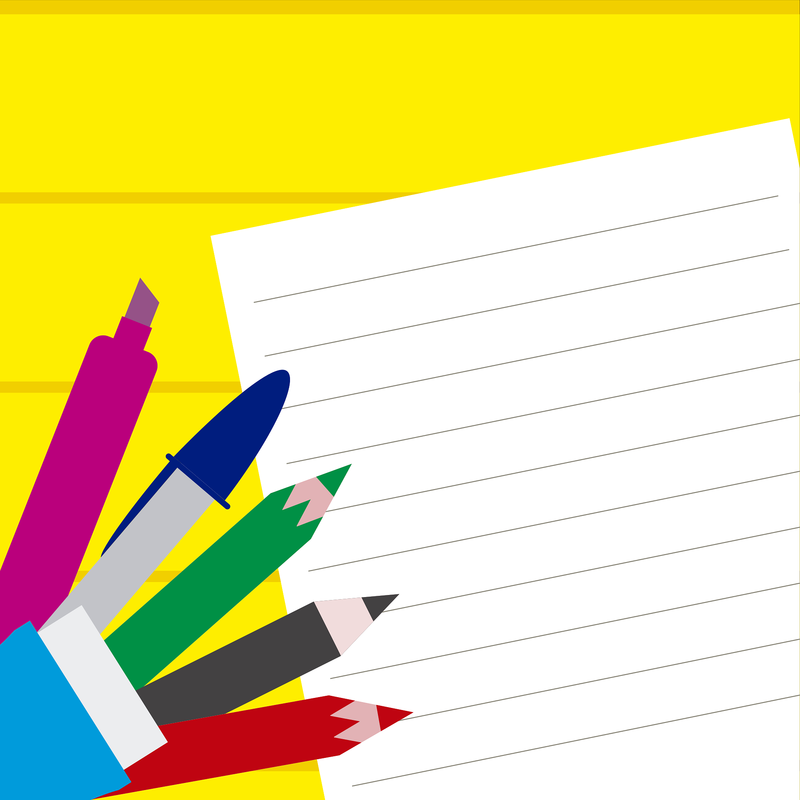
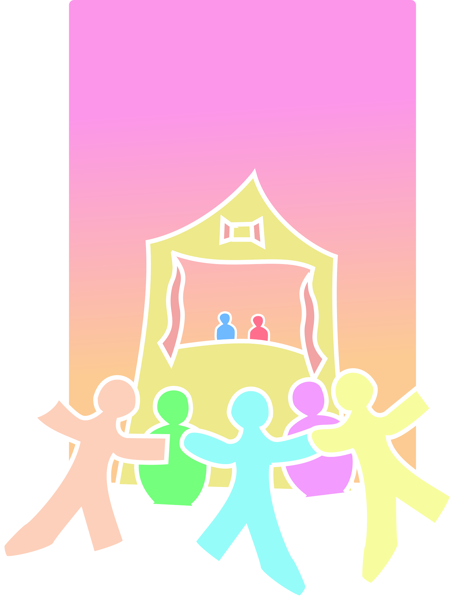

Texto
¡Atención, equipos cooperativos! Para completar con éxito nuestro proyecto "La comunicación es un tesoro", vuestro grupo va a tener que superar un doble desafío creativo. No solo vais a ser actores y actrices, ¡también os vais a convertir en diseñadores gráficos digitales!
Aquí tenéis las dos grandes misiones que debéis elaborar juntos:
---
🏮 Misión 1: La Representación en el Kamishibai
Cada equipo recibirá un cuento misterioso en imágenes, ¡pero cuidado, no tiene final! Vuestro trabajo consistirá en:
- Pensar e inventar un desenlace muy creativo, reflexivo y sorprendente para la historia.
- Redactar el guion de vuestro final adaptando el ritmo de la lectura.
- Ilustrar una lámina gigante con dibujos hechos por vosotros donde incluyáis onomatopeyas llamativas (como ¡Boom!, ¡Zas!, ¡Riiing!).
- Hacer la función: Meteréis las láminas en nuestro teatro de madera físico y representaréis la obra modulando vuestra voz ante las familias.

---
🎨 Misión 2: El Tríptico e Invitación Digital en Canva
Para que todo el mundo conozca vuestro gran esfuerzo, utilizaremos en las tablets la plataforma Canva for Education. Cada grupo de iguales elaborará un folleto digital (tríptico) que servirá para:
- Explicar y mostrar con textos sencillos e imágenes cómo ha sido vuestro proceso de trabajo a lo largo de todo este proyecto.
- Hacer una invitación especial y muy bonita dirigida a vuestras familias para que asistan al colegio el día de la representación en el teatro.

---
En este reto, todos sumamos y todos aportamos gracias a las herramientas mágicas que nos ofrece Canva, diseñadas para que aprender sea fácil y cómodo para cada uno de vosotros:
- 🔤 Lectura Fácil: Podremos elegir tipografías específicas para adaptar la lectura y ayudar a los compañeros que lo necesiten, como la letra especial OpenDyslexic.
- 🎨 Colores Claros: Utilizaremos distintas tonalidades de colores para que las letras se vean súper bien y no cansen vuestros ojos.
- 🔊 Elementos con Voz: ¡Incluso podremos añadir opciones de audio de forma muy intuitiva para escuchar las invitaciones con voz!
- ☁️ Ayuda en la Nube: Vuestras láminas y diseños se guardarán automáticamente en la nube de forma segura. Así, la maestra podrá supervisar vuestro maravilloso trabajo día a día y ayudaros siempre que os atasquéis.